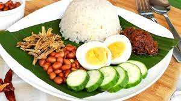

Nasi Lemak

Description
Nasi lemak is a traditional Malay dish served usually as breakfast. Literally meaning 'fatty rice' or 'glutinous rice', it is made of rice which as been enriched with coconut milk. Accompanying the rice is a spicy paste called sambal, anchovies, roast beans, sliced cucumbers, hard-boiled egg and fried chicken. It is one of the most widely recognized dishes in Malaysia. For this recipe, we will only include instructions for cooking the rice and the sambal.
Ingredients
- Rice
- Water
- Garlic
- Pandan leaves
- Coconut milk
- Salt
- Cooking oil
- Shallots
- Onions
- Belacan (Dried shrimp paste)
- Anchovies
Steps
- Firstly, we shall prepare the rice. Measure the amount of rice to be cooked and wash it
- Measure the amount of water and put it in a rice cooker
- Add some coconut milk
- Add some garlic
- Add several pandan leaves
- Add a small amount of salt
- Add a small amount of cooking oil
- Turn on the rice cooker
- Add the aforementioned rice which has been washed
- Mix the ingredients in the rice cooker every 5 minutes until it is cooked
- Now for the sambal. Blend one shallot, several onions, a small piece of garlic, some belacan and some anchovies.
- Tumis(fry/sautee) the blended ingredients
- Add some salt and wait for it to boil
- Once done you can serve the sambal with the rice